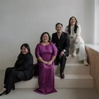

unclehung.official
unclehung.official
Ihr Feed bleibt, wie er ist. Darauf bauen die nächsten 30 Beiträge auf, so wie Sie sie nach und nach posten: der gedeckte Tisch, Uncle Hung und die Familie, die Lunchdeals, die Pho, Matcha und Icetea, der Abend unter der Leuchtschrift.
Kein Foto, das schon auf Ihrem Profil steht, kommt noch einmal vor: Alle stammen von Ihrer heutigen Seite. Mit dem Schalter sehen Sie Ihren Feed heute und mit den nächsten 30; die Nummern zeigen die Reihenfolge zum Posten. Tippen Sie einen Beitrag an, dann sehen Sie ihn groß und mit einem Text dazu.

Familie